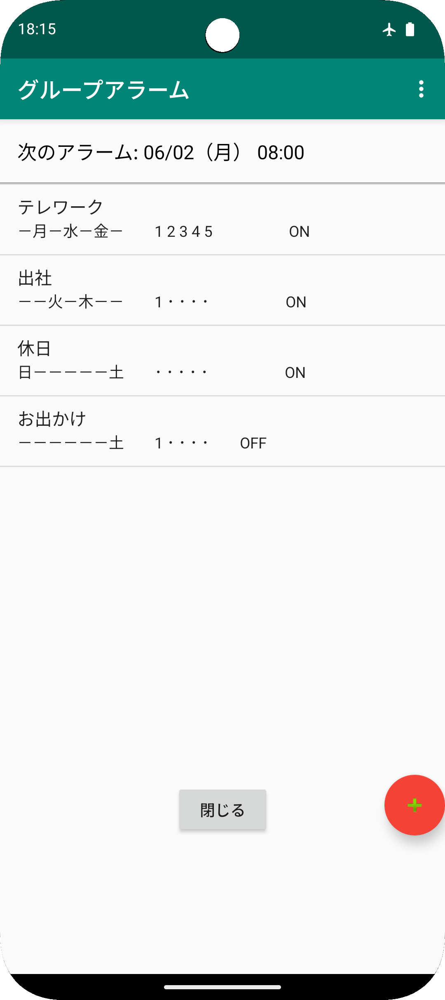
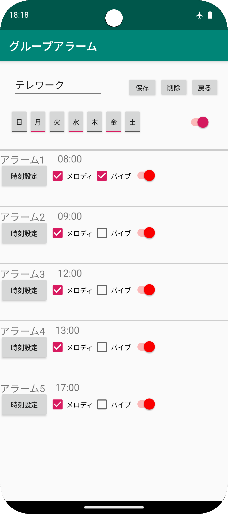
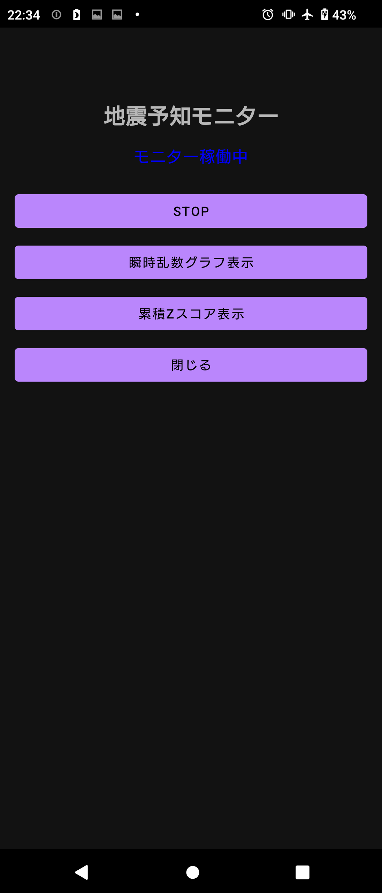

グループアラーム：目覚まし時計・アラーム・運勢占い
テレワーク・出社・休日・外出…
どんなライフスタイルにも柔軟に対応できるアラームアプリです。
シフト勤務のように日ごとにスケジュールが変わる方にも最適！
グループ単位で複数のアラームを一括でON/OFFできます。
また、その日の運勢占いを、かわいいねこアイコンで表示(Ver2より)。
■ グループアラームで1日の流れを一括コントロール！
- 起床・仕事開始・昼休み・午後再開・退勤まで、1日の予定を1つのグループとして簡単セット
- 「テレワーク」「出社」「シフト勤務」「休日」など、複数のスケジュールをグループで登録・切り替え可能
■ 急なスケジュール変更もスムーズ対応！
- 「出社」から「テレワーク」、「日勤」から「夜勤」への切り替えも、曜日設定をタップするだけ
- 突然の予定変更にも、あわてない毎日へ
■ その他の便利機能
- アラームごとにメロディ・バイブのON/OFFを個別にカスタマイズ
- グループ単位での有効/無効の切り替え
- 次のアラーム時刻をトップ画面にわかりやすく表示
- シンプルな目覚まし時計としても利用可能
- メロディは、スマホ本体の設定→音設定→アラーム音→音を選択、で変更可能
■ 占い機能（Ver2より追加）
- 一覧画面右上の3点マークをタップし、誕生日を設定
- アラーム停止画面で、その日の運勢をねこアイコンで表示




★ レビュー記事掲載のお知らせ
アプリブ様にレビュー記事を掲載していただきました！
地震予知モニター
発生乱数の偏りから地震の前兆などの異常を検知するアプリ。10秒毎の乱数ビットの比率、累積偏りをグラフ化。
【詳細説明】
地震予知モニターは、1998年にプリンストン大学で始まった
「地球意識プロジェクト（Global Consciousness Project：GCP）」※の実験原理を参考に、
Android端末のハードウェア乱数から得られる0/1ビット列に統計的偏りが生じるかを観測するアプリです。
10秒毎に“1”の出現割合を集計・可視化し、累積偏りが大きい場合、異常状態と考えられます。
※GCPは世界各地に設置したハードウェア乱数生成器（RNG）で得たデータと、大規模イベント時の乱数偏差を解析する国際共同研究です。
https://www.global-mind.org/
米国同時多発テロや東日本大震災の時も乱数の偏りが大きかったそうです。
■ 主な機能
- ハードウェア乱数取得：SecureRandomによる0/1ビット列を10秒毎に50ビット取得
- 10秒毎の“1”出現割合を自動計算・更新
- 10秒毎の乱数比率をグラフ表示
- 乱数比率の累積偏りをグラフ表示
- アプリを閉じても、バックグラウンドで乱数を継続取得
■ 使い方ガイド
- アプリを起動し「START」をタップ
- バックグラウンドで乱数取得＆集計を継続
- 「瞬時乱数グラフ表示」をタップで、乱数比率をリアルタイムグラフで確認
- 「累積Zスコア表示」をタップで、乱数比率の累積偏りをリアルタイムグラフで確認
■ ご注意
本アプリはあくまで乱数の比率を計算するものです。地震予知を保証するものではありません。
